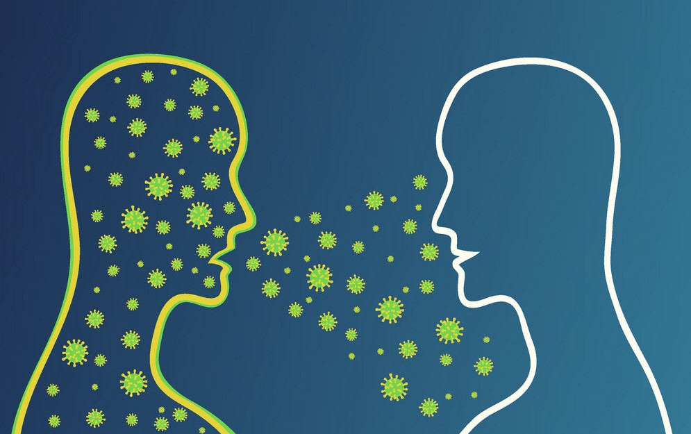
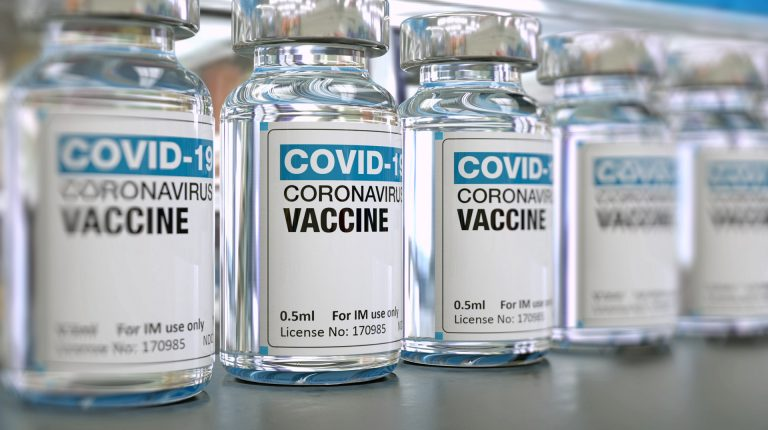

How is the virus transmitted?
It’s likely that the Coronavirus Disease (COVID-19) originated in
an animal species, and then spread to humans.
Person to person spread of the novel corona virus is reported, but
it is not yet understood how easily this happens.
Other human coronavirus strains are spread from person to
person through contaminated droplets from a person who is sick
with the illness (through coughing or sneezing) or contaminated hands

Is there a vaccine against the novel coronvirus?
Currently there are available vaccines that
protect against Coronavirus Disease
(COVID-19)
Protect Yourself Against COVID-19
Choose To Vaccinate

Is there any treatment for Coronavirus Disease?
There is no specific treatment. It is mainly
supportive treatment that aims at
reducing symptoms
What should travelers do in case they experience any
signs of respiratory infection before, during and after
their trip?
- Seek medical care right away. Before you go to a doctor’s office or emergency room, call ahead and tell them about your recent travel and your symptoms.
- Avoid contact with others.
- Do not travel while sick.
- Cover your mouth and nose with a tissue or your sleeve (not your hands) when coughing or sneezing.
- Wash hands often with soap and water for at least 20 seconds. Use an alcohol-based hand sanitizer if soap and water are not available
What information sources are reliable?
We recommend that you receive the correct information from government health agencies and do not circulate information about diseases in genera
Ways to prevent the disease
- Avoid animals (alive or dead), animal markets, and products that come from animals (such as uncooked meat).
- Avoid close contact with anyone showing symptoms of respiratory illness.
- Wash hands often with soap and water for at least 20 seconds.
- Use hand sanitizer if soap and water are not available.
- Cover coughs and sneezes with tissues.
- Do not travel if you develop any illness symptoms
If you want to know more
World Health Organization